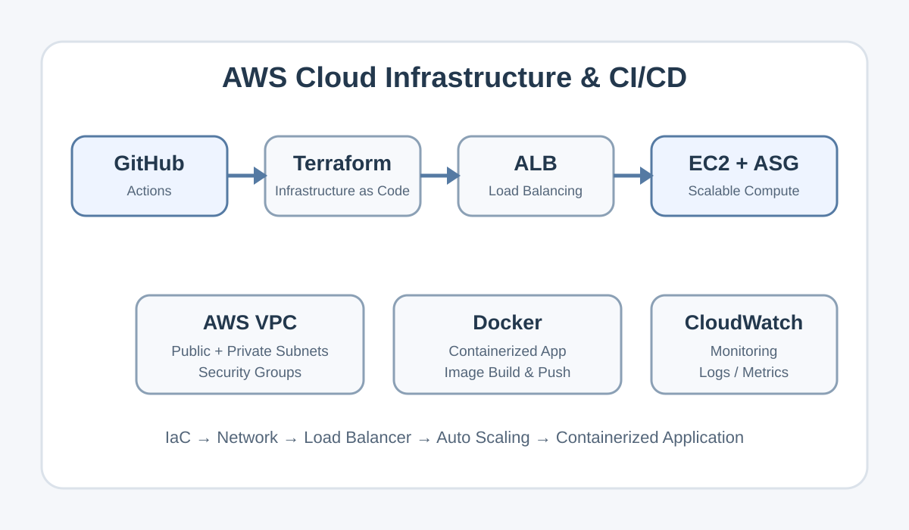
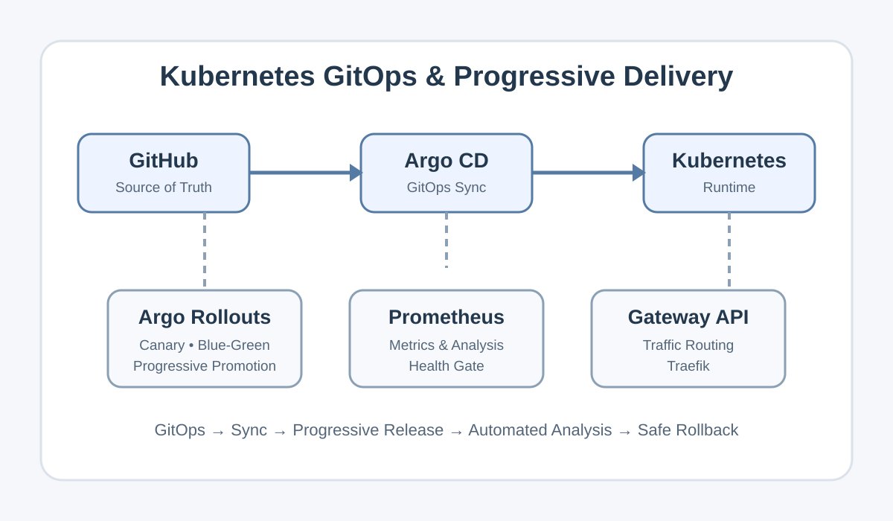
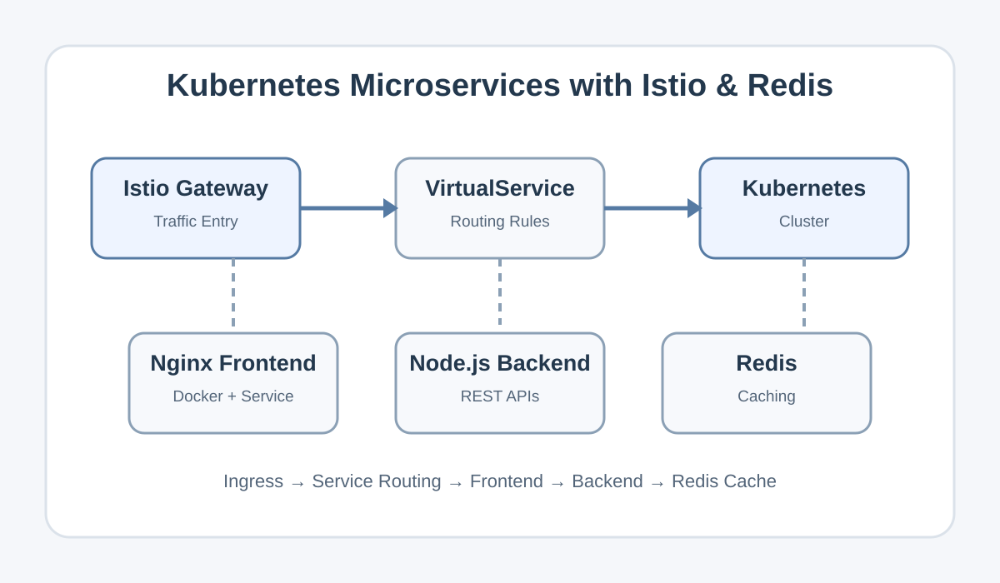
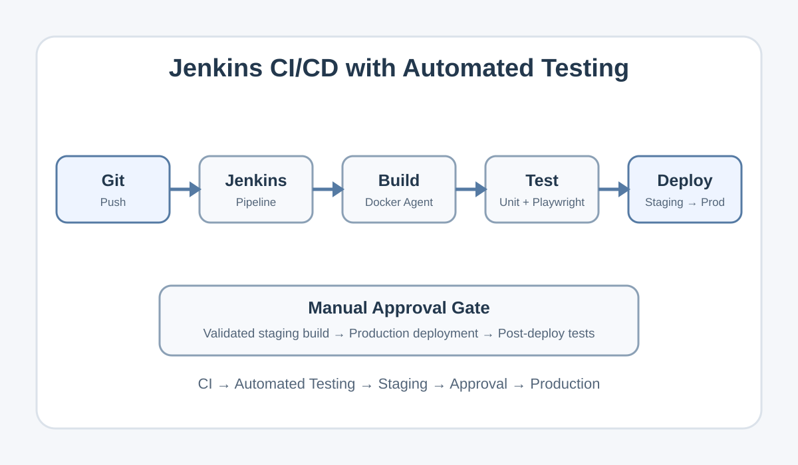
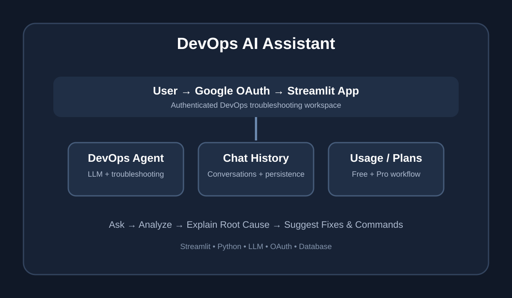

AWS Cloud Infrastructure & CI/CD
Terraform-managed AWS infrastructure with VPC, EC2, Application Load Balancer, Auto Scaling, Docker, GitHub Actions and CloudWatch.
View on GitHubI build and automate scalable cloud-native solutions using AWS, Kubernetes, Docker and modern DevOps practices. I specialize in CI/CD pipeline design, Infrastructure as Code and GitOps workflows to deliver reliable, secure and high-performing systems.

I’m a DevOps Engineer who enjoys turning manual, repetitive infrastructure work into reliable and repeatable automation. My hands-on work spans AWS, Kubernetes, Docker, Terraform, Jenkins, Helm, Ansible, Linux and GitOps tooling.
I build practical environments that demonstrate cloud infrastructure, CI/CD, container orchestration, progressive delivery, service-mesh routing and observability. I approach problems with a troubleshooting mindset and focus on solutions that are scalable, secure and maintainable.
SRV Boys Higher Secondary School, Rasipuram, Namakkal.
Percentage: 91.4%
SRV Boys Higher Secondary School, Rasipuram, Namakkal.
Percentage: 83.83%
Dr. Mahalingam College of Engineering and Technology, Pollachi, Coimbatore.
CGPA: 8.88
Robomiracle Private Ltd, Coimbatore.
Hands-on experience with 3D printing, Arduino, sensors, prototyping and C programming.
Tata Consultancy Services (TCS)
Working with Linux, Shell scripting and Ansible to automate infrastructure management, troubleshoot issues and improve operational reliability.


Real-world projects demonstrating cloud infrastructure, Kubernetes, GitOps, CI/CD and DevOps automation.

Terraform-managed AWS infrastructure with VPC, EC2, Application Load Balancer, Auto Scaling, Docker, GitHub Actions and CloudWatch.
View on GitHub
GitOps workflows using Argo CD and Argo Rollouts with Helm, Prometheus, Gateway API and Traefik for Canary and Blue-Green releases.
View on GitHub
Containerized Nginx frontend and Node.js backend deployed on Kubernetes with Redis caching and Istio Gateway/VirtualService routing.
View on GitHub
Multi-stage Jenkins pipeline using Docker agents, unit tests, Playwright tests, staging deployment, manual approval and production deployment.
View on GitHub
AI-powered DevOps troubleshooting assistant built with Streamlit and an LLM, with Google OAuth, persistent conversations, usage limits and plan management.
View on GitHubHave a DevOps, cloud or automation opportunity? Send me a message and I’ll get back to you.